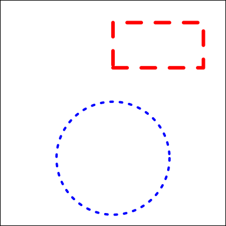

Chapter 8 grid
grid 绘图系统极其灵活、强大，几乎能绘制任何图形，当然代价是很繁琐。 grid 包是 ggplot2 / ComplexHeatmap 等的底层包。
grid 包的创建者 Paul Murrell’s Home Page: https://www.stat.auckland.ac.nz/~paul/
grid 的核心概念有：
- 坐标系统 unit(1, “npc”)
- 基本图形 grid.circle() 与 gpar()对象
- 图形对象 Grob 对象 及其排布、放置
- 视口 viewport 及其嵌套、导航
创建新画布 grid.newpage()
8.1 坐标系统 unit(1, “npc”)
所谓坐标系统，主要就是坐标的单位系统。
unit(x, units, data=NULL)
例: 默认的单位 npc 是相对概念，把当前视口的长宽标准化到 0-1。 左下角是(0,0)，右上角是(1,1)。
library(grid)
grid.text(label = "Let's us begin!") #默认画到中间
grid.text(label = "2nd line", x=unit(0.1, "npc"), y=0.8,
just="left", #相对于(x,y)点的左边
rot = -10, #旋转30度(和数学一致，+为逆时针)
gp=gpar(col="purple", cex=2, face="bold")) #紫色、2倍、黑体 坐标系统：描述
native: 位置和大小相对于当前 viewport 的x、y轴的范围
npc: 定义当前 viewport 的左下角(0,0)，右上角(1,1)
snpc: 位置和大小被表示为当前 vewport 的宽度和高度中更小的值的比例
inches: 英寸，(0,0)表示 viewport 的左下角
cm: 厘米
mm: 毫米
points: 点，每英寸相当于 72.27 个点
bigpts: 大点，每英寸相当于72个大点
picas: 1 pica 相当于12个点
dida: 1157 个 dida 相当于 1238 个点
cicero: 1 cicero 相当于 12 个 dida
scaledpts: 相当于一个点的 65536 分之一
char: 相当于字体大小为单位(由 fontsize 和 cex 确定)
lines: 相当于以线条高度为单位(由 fontsize, cex, lineheight 确定)
strwidth, strheight: 相当于以字符串的宽高为单位(由 fontsize, cex, fontfamily, fontface 确定)
grobwidth, grobheight: 以给定图形对象的宽高位单位。8.2 基本图形及图形参数 gp=gpar()
绘制图形要指定坐标，指定长宽等参数，而其他参数则由 gp=gpar() 设定。
常用的绘图函数: a1=ls(“package:grid”);a1[grep(“grid.” a1)]
- grid.rect(…)
- grid.lines(…)
- grid.polygon(…)
- grid.circle(…)
- grid.text(…)
用gapr对象表示图形参数：
- col: Colour for lines and borders.
- fill: Colour for filling rectangles, polygons, …
- alpha: Alpha channel for transparency
- lty: Line type
- lwd: Line width
- lex: Multiplier applied to line width
- lineend: Line end style (round, butt, square)
- linejoin: Line join style (round, mitre, bevel)
- linemitre: Line mitre limit (number greater than 1)
- fontsize: The size of text (in points)
- cex: Multiplier applied to fontsize
- fontfamily: The font family
- fontface: The font face (bold, italic, …)
- lineheight: The height of a line as a multiple of the size of text
- font: Font face (alias for fontface; for backward compatibility)
8.2.1 使用 rect.rect() 绘制矩形
library(grid)
grid.rect() #默认是充满视口(viewport)
# 自定义矩形
grid.rect(
x=0.5, y=0.8, #设置矩形的位置
just = "left", #坐标的相对位置
width=0.4, height=0.2, #宽高
gp=gpar(col="red", #边框颜色
lwd=3, # 边框宽度
fill="#00112200", #填充色
lty=2) #边框虚线
)
# 自定义圆
grid.circle(x = 0.5, y = 0.3, r = 0.25,
gp = gpar(col = "blue",
lty = 3, lwd=2))
8.2.2 绘制嵌套的圆环，并在顶部添加文字
library(grid)
suffix <- c("even", "odd")
for (i in 1:8)
grid.circle( #画图
name = paste0("circle.", suffix[i %% 2 + 1]), #名字
r = (9 - i) / 20, #半径
gp = gpar(
col = NA, #边框颜色
fill = grey(i / 10) #填充颜色
)
)
# 在顶部添加文字
vp1=viewport(x=0.5, y=0.95, width=0.3, height=0.15)
pushViewport(vp1)
grid.text("Circles and rings", gp=gpar(col="red"))
upViewport()8.3 图形对象 Grob 对象 及其排布、放置
grob, or gList, or gTree, or gPath.
8.3.1 Grob 对象
每一个绘图原语都对应一个Grob，grob的命名格式是**Grob，Grob对象是一个可编辑的图形组件，该组件保留图形的所有属性，但不会立即输出图形：
- rectGrob(…)
- linesGrob(…)
- polygonGrob(…)
- circleGrob(…)
- textGrob(..)
要输出Grob表示的图形，可以使用grid.draw()函数绘制图形：
grid.draw(roundrectGrob(width=0.9, height=0.9)) #一行画一个圆角矩形
circ1 <- circleGrob(r=0.4)
grid.draw(circ1)8.3.2 grid.edit
circ1 <- circleGrob(r=0.4, name="circleX")
grid.draw(circ1)# 获取对象
obj1=grid.get("circleX") #就是 Grob的name属性
# 编辑对象，接收 gPath
grid.edit(
"circleX",
gp = gpar(
col = "red",
fill="orange",
lwd=3
)
)如果传入 grob 对象，则要使用 editGrob() 函数
circ1 <- circleGrob(r=0.4, name="circleX")
circ2=editGrob(circ1, gp = gpar(col="blue", lwd=7) )
grid.draw(circ2)8.3.3 对象排布 gList, or gTree
- grob() and gTree() are the basic creators,
- grobTree() and gList() take several grobs to build a new one.
gTree 能包含多个 grob 子对象。
candy <- circleGrob(r = 0.1, x = 0.5, y = 0.6)
stick <- segmentsGrob(x0 = 0.5, x1 = 0.5, y0 = 0, y1 = 0.5)
lollipop <- gTree(children = gList(candy, stick)) #组合两个对象
# 一组内可以一起编辑，都设置成红色
lollipop2=editGrob(lollipop, gp=gpar(col="red", lwd=2))
grid.draw(lollipop)
# 新视口
pushViewport( viewport(x=0.8, width=0.5,height = 0.5))
grid.draw(lollipop2)# 查看树结构
grid.ls(lollipop2)## GRID.gTree.5032
## GRID.circle.5030
## GRID.segments.50318.3.4 gPath //todo
8.3.5 使用grobX和grobY获得grob对象的坐标
grid.newpage()
r1 <- rectGrob(0.5, 0.5, width = 0.8, height = 0.8,
#just = c("left", "top"),
gp=gpar(col="red", lty=2, fill="#00112200"), name="r1")
grid.draw(r1)
# grobX(obj, theta)# 相对于obj的边界，起始点是obj的中心，转theta角度后在x轴的投影坐标
grid.text("0-0", x=grobX(r1, 0), y=grobY(r1, 0))
grid.text("90-0", x=grobX(r1, 90), y=grobY(r1, 0))
grid.text("180-0", x=grobX(r1, 180), y=grobY(r1, 0))
#grid.text("270-0", x=grobX(r1, 270), y=grobY(r1, 0)) #和90-0重叠
#grid.text("360-0", x=grobX(r1, 360), y=grobY(r1, 0)) #和0-0重叠
# grobY(obj, theta) #相对于obj的中心，旋转theta角度后在y轴边界上的投影坐标
grid.text("0-90", x=grobX(r1, 0), y=grobY(r1, 90), gp=gpar(col="red"))
#grid.text("0-180", x=grobX(r1, 0), y=grobY(r1, 180), gp=gpar(col="red")) #和0-0重叠
grid.text("0-270", x=grobX(r1, 0), y=grobY(r1,270), gp=gpar(col="red")) #和0-0重
# 剩下的坐标轴方位
grid.text("90-90", x=grobX(r1, 90), y=grobY(r1, 90), gp=gpar(col="blue")) #顶部
grid.text("270-270", x=grobX(r1, 270), y=grobY(r1, 270), gp=gpar(col="blue")) #底部
# 其余2个对角线
grid.text("180-90", x=grobX(r1, 180), y=grobY(r1, 90), gp=gpar(col="purple")) #左上角
grid.text("180-270", x=grobX(r1, 180), y=grobY(r1, 270), gp=gpar(col="purple")) #左下角
# 加一个点，使用两种坐标系指定位置
grid.points(x=unit(0.5, "npc")/2,
y=grobY(r1, 90)/4,
pch=19, size=unit(0.04, "npc"), gp=gpar(col="#FF000099"))
# 点下方添加文字描述
grid.text("box1",
x=unit(0.5, "npc")/2,
y=grobY(r1, 90)/4 - unit(2, "mm"),
just = "top", gp=gpar(col="red") )
# 加一个箭头，中心指向矩形的右上角
grid.segments(0.5, 0.5, grobX(r1, 0), grobY(r1, 90),
arrow=arrow(angle=15, type="closed"),
gp=gpar(fill="orange"))
# 再加一个矩形2
r2 <- rectGrob(0.5, 0.5, width = 0.2, height = 0.2,
just = c("left", "top"),
gp=gpar(col="blue", fill="#00112200"), name="r2")
grid.draw(r2)
# 在矩形中间添加文字
grid.text("box2",
x=grobX(r2, 90),
y=grobY(r2, 0),
gp=gpar(col="#0000FF99") )
# 箭头指向，中心指向矩形的下边中点
grid.segments(0.5, 0.5, grobX(r2, 90), grobY(r2, -90),
arrow=arrow(angle=15, type="closed"),
gp=gpar(fill="grey", col="red")) #红边、灰色填充
# 矩形1的左下角，指向矩形2的右下角
grid.segments(grobX(r1, 180), grobY(r1, -90),
grobX(r2, 0), grobY(r2, -90),
arrow=arrow(angle=5, type="closed"),
gp=gpar(fill="purple", col="purple"))
# 矩形2的右边中点，指向矩形1的右下角，大箭头
grid.segments(grobX(r2, 0), grobY(r2, 0),
grobX(r1, 0), grobY(r1, -90),
arrow=arrow(angle=20, type="closed"),
gp=gpar(fill="red", col="grey"))8.4 视口(viewport)
viewport是grid包的核心对象，简单来说，它就是画布中的一个矩形的绘图区域，直译为视口，通过viewport()函数新建一个viewport对象。
- 视口就是绘图区，每个绘图对象都在某个视口中。
- 当前视口是唯一能绘图、编辑的视口。
- 视口可以嵌套成树状结构，可以选择、删除
- 创建的视口只有推入视口树中才能生效。
有了viewport这个工具，我们就可以很灵活的在图形中画出任意区域分割的子图了。
viewport(x = unit(0.5, "npc"), y = unit(0.5, "npc"),
width = unit(1, "npc"), height = unit(1, "npc"),
default.units = "npc", just = "centre",
gp = gpar(), clip = "inherit",
xscale = c(0, 1), yscale = c(0, 1),
angle = 0,
layout = NULL,
layout.pos.row = NULL, layout.pos.col = NULL,
name = NULL)
- x：视口的几何中心点相对页面左下角原点的x坐标轴，默认单位是npc
- y：视口的几何中心点相对页面左下角原点的y坐标轴，默认单位是npc
- width：视口的宽度（x轴方向）
- height：视口的高度（y轴方向）
- default.units：默认单位为npc (Normalised Parent Coordinates)，含义是规范化化的父区域坐标
- just：x和y所指的位置，默认为矩形中心位置
- gp：gpar对象，用于设置图形参数；
- clip：裁剪区域，有效值是“on”，“inherit”或“off”，指示剪裁到视口范围内，从父视口继承剪裁区域，或者完全关闭剪裁。 为了后向兼容性，逻辑值TRUE对应于“on”，而FALSE对应于“inherit”
- xscale，yscale：两个数值元素的向量，用于表示坐标轴的最小值和最大值。
- angle：把视口逆时针旋转的角度
- layout：布局（grid.layout）对象，用于把视口划分为多个子区域
- layout.pos.row，layout.pos.col：子区域在父布局中的行位置和列位置
- name：此视口的名字，用于搜索和定位8.4.1 函数grid.show.viewport()查看创建的视口
height和width是矩形的长和宽，x和y是视口中心点（也就是，矩形的几何中心点）距离x坐标抽和y坐标轴的距离。
vp1 <- viewport(x = 0.5, y = 0.5,
width = 0.5, height = 0.25,
angle=30)
grid.show.viewport(vp1)8.4.2 视口可以旋转
grid.newpage()
grid.rect()
# 定义视口
vp1=viewport(
x=0.5, y=0.4,
width=0.6, height=0.2,
angle=30 #逆时针旋转
)
# 把视口推入当前位置，称为当前视口
pushViewport(vp1)
# 在当前视口绘图
grid.rect(gp=gpar(col="red", lty=2))
grid.text("in the vewport", x=0,y=1, just=c("left", "top"))
8.4.3 viewport树
视口支持嵌套成树状结构。 当前视口是唯一可编辑的区域，可以把某个视口设为当前视口。
通过5个函数实现对viewport树的遍历和更新：
- 使用pushViewport()可以将指定的viewport插入到当前viewport的子节点中，同时当前viewport对象移动为刚刚插入的viewport；
- 使用popViewport()可以删除当前viewport，同时当前viewport改为刚刚删除的viewport的父节点；
- 使用upViewport()当前viewport移动到父节点；
- 使用downViewport()当前viewport移动到指定name的子节点；
- 使用seekViewport()在整棵树范围内搜索指定name的viewport，将其设置为当前viewport。
- upViewport(0) 回到根视口
注意：当向树中push一个viewport时，如果树中存在一个级别（level）相同，名字相同的viewport，那么push操作会把该viewport替换掉。
绘制的图形依次嵌套，这说明，每push一次，原活跃viewport都变成父节点，把当前的veiwport作为子viewport。
后续的旋转都是相对于当前视口的旋转。
grid.newpage()
grid.rect() #第一个视口是默认的
grid.text("viewport root", x=0, y=1, just=c("left", 'top')) #在矩形左上角写字
# 新建视口2，并推入
pushViewport( viewport( width=0.8, height=0.5, angle=30 ) )
grid.rect(gp=gpar(lty=2, col="red")) #矩形框
grid.text("viewport2", x=0, y=1, just=c("left", 'top')) #在矩形左上角写字
# 继续嵌套视口3
pushViewport( viewport( width=0.8, height=0.5, angle=30,
name="vp3")) #视口3有一个名字
grid.rect(gp=gpar(lty=2, col="orange")) #矩形框
grid.text("viewport3", x=0, y=1, just=c("left", 'top')) #在矩形左上角写字
# 继续嵌套视口4
pushViewport( viewport( width=0.9, height=0.7, angle=30,
gp=gpar(fill="#00112200") ) ) #视口4填充为透明
grid.rect(gp=gpar(lty=2, col="blue")) #矩形框
grid.text("viewport4", x=0, y=1, just=c("left", 'top')) #在矩形左上角写字
# 返回上一个视口，3
upViewport()
grid.text("viewport3", x=1, y=0, just=c("right", 'bottom'),
gp=gpar(col="orange")) #在矩形右下角写字
# 返回上一个视口，2
upViewport()
grid.text("viewport2", x=1, y=0, just=c("right", 'bottom'),
gp=gpar(col="red")) #在矩形右下角写字
# 找到视口名
seekViewport(name="vp3")
# 在中间添加一个圆
grid.circle(gp=gpar(col="orange", lty=2, fill="#00112200")) #填充为透明
upViewport(0) #回到最顶部print(current.vpTree()) # 查看当前viewport树结构## viewport[ROOT]->(viewport[GRID.VP.1244]->(viewport[vp3]->(viewport[GRID.VP.1245])))8.5 行列布局 layout
grid包中定义了布局对象，布局是矩形的子分区，也就是说，布局（layout）把一个矩形区域细分为更小的分区。
grid.layout(nrow = 1, ncol = 1,
widths = unit(rep_len(1, ncol), "null"),
heights = unit(rep_len(1, nrow), "null"),
default.units = "null",
respect = FALSE, just="centre")
参数注释：
nrow,ncol：布局分为多少个行和列，每一个行和列构成的单元叫做分区（subdivision）
widths，heights：每一个分区的宽和高
default.units：默认单位
respect：逻辑值，如果为true，指定行高度和列宽度都遵守。
just：指定对齐方式，有效的值是："left", "right", "centre", "center", "bottom", 和 "top".8.5.1 grid.show.layout(layout) 查看布局
把top.vp视口分割为3X3的分区，使用函数grid.show.layout()查看布局，创建的布局如下图所示：
layout <- grid.layout(nrow=3, ncol=3,
widths=unit(c(5, 1, 2), c("lines", "null", "lines")),
heights=unit(c(5, 1, 4), c("lines", "null", "lines")))
top.vp <-viewport(layout=layout, name="top") # viewport 的 layout参数
grid.show.layout(layout)创建一系列的viewport，占用布局的各个分区，由于没有push任何viewport，因此画布中没有绘制任何图形。
为每个视口命名时，使用统一的格式：margin+数值，如下代码所示：
margin1 <- viewport(layout.pos.col = 2, layout.pos.row = 3, name = "margin1") #(3,2)
margin2 <- viewport(layout.pos.col = 1, layout.pos.row = 2, name = "margin2") #(2,1)
margin3 <- viewport(layout.pos.col = 2, layout.pos.row = 1, name = "margin3") #(1,2)
margin4 <- viewport(layout.pos.col = 3, layout.pos.row = 2, name = "margin4") #(2,3)
plot <- viewport(layout.pos.col = 2, layout.pos.row = 2, name = "plot") #(2,2)
# R用数字来表示位置，数值代表的含义是：1=Buttom，2=Left，3=Top，4=Right，视口被布局分割的分区如下图
splot = vpTree(top.vp, vpList(margin1, margin2, margin3, margin4, plot))
grid.newpage()
pushViewport(splot)
# 1bottom
seekViewport("margin1")
grid.rect(gp=gpar(col="grey", lwd=2))
grid.text("margin1", x=0,y=1,just=c('left','top'), gp=gpar(col="grey"))
# 2left
seekViewport("margin2")
grid.rect(gp=gpar(col="grey", lwd=2))
grid.text("margin2", x=0,y=1,just=c('left','top'), gp=gpar(col="grey"))
# 3top
seekViewport("margin3")
grid.rect(gp=gpar(col="grey", lwd=2))
grid.text("margin3", x=0,y=1,just=c('left','top'), gp=gpar(col="grey"))
# 4right
seekViewport("margin4")
grid.rect(gp=gpar(col="grey", lwd=2))
grid.text("mg4", x=0,y=1,just=c('left','top'), gp=gpar(col="grey"))
# 5 mid
seekViewport("plot")
grid.rect(gp=gpar(col="black", lwd=2))
grid.xaxis()
grid.yaxis()
grid.text("plot", x=0,y=1,just=c('left','top'), gp=gpar(col="grey"))8.5.2 拼装散点图
library(grid)
layout <- grid.layout(nrow=3, ncol=3,
widths=unit(c(5, 1, 2), c("lines", "null", "lines")),
heights=unit(c(5, 1, 4), c("lines", "null", "lines")))
#grid.show.layout(layout)
top.vp <-viewport(layout=layout,name="top")
#grid.show.viewport(top.vp)
set.seed(202201)
x <- runif(10)
y <- runif(10)
xscale <- extendrange(x) #grDevices 包基础函数 坐标轴量变留一小段空白
yscale <- extendrange(y)
margin1 <- viewport(layout.pos.col = 2, layout.pos.row = 3, name = "margin1")
margin2 <- viewport(layout.pos.col = 1, layout.pos.row = 2, name = "margin2")
margin3 <- viewport(layout.pos.col = 2, layout.pos.row = 1, name = "margin3")
margin4 <- viewport(layout.pos.col = 3, layout.pos.row = 2, name = "margin4")
plot <- viewport(layout.pos.col = 2, layout.pos.row = 2, name = "plot",xscale = xscale, yscale = yscale)
splot <- vpTree(top.vp, vpList(margin1, margin2, margin3, margin4, plot))
#grid.show.viewport(splot)
pushViewport(splot)
seekViewport("plot")
grid.xaxis()
grid.yaxis()
grid.rect()
grid.points(x, y,pch=20)
seekViewport("margin1")
grid.text("Random X", y = unit(1, "lines"))
seekViewport("margin2")
grid.text("Random Y", x = unit(1, "lines"), rot = 90)8.5.3 print.ggplot(g1, vp=) 拼合 ggplot2 图形
方法1: 使用行列布局
print.ggplot()函数。这个函数有一个选项vp，可以指定这个图形要绘制的viewport的位置。
# step1，创建多个图形
library(grid)
library(ggplot2)
# prepare ggplot charts
p.hist.len <- ggplot(iris) + geom_histogram(aes(x=Sepal.Length))+theme_classic()
p.hist.wid <- ggplot(iris) + geom_histogram(aes(x=Sepal.Width)) + coord_flip()+theme_classic()
p.scatter <- ggplot(iris) + geom_point(aes(x=Sepal.Length, y=Sepal.Width))+theme_classic()
# step2，创建布局，分割视口，并push当前视口
grid.newpage()
pushViewport(viewport(layout = grid.layout(3, 3)))
# step3，把图形输出到布局的不同区域中
print(p.scatter, vp=viewport(layout.pos.row=2:3, layout.pos.col=1:2))
print(p.hist.len, vp=viewport(layout.pos.row=1, layout.pos.col=1:2))
print(p.hist.wid, vp=viewport(layout.pos.row=2:3, layout.pos.col=3))方法2: 使用视口不同方法
使用print(, newpage=F)函数。
# top left panel
grid.newpage()
vp.len <- viewport(x=0, y=0.66, width=0.66, height=0.34, just=c("left", "bottom"))
pushViewport(vp.len)
print(p.hist.len, newpage=F)
upViewport() # 返回父节点
# bottom right panel
vp.wid <- viewport(x=0.66, y=0, width=0.34, height=0.66, just=c("left", "bottom"))
pushViewport(vp.wid)
print(p.hist.wid, newpage=F)
upViewport()
# bottom left panel
vp.scatter <- viewport(x=0, y=0, width=0.66, height=0.66, just=c("left", "bottom"))
pushViewport(vp.scatter)
print(p.scatter, newpage=F)
upViewport()
8.6 视口路径 Viewport paths
可以使用视口路径来选择某个视口，适合选择不同级别的同名视口。
grid.newpage()
pushViewport(viewport(name = "A"))
pushViewport(viewport(name = "B"))
pushViewport(viewport(name = "A"))
seekViewport("A")
current.vpTree(FALSE)## viewport[A]->(viewport[B]->(viewport[A]))# 通过 vpPath() 函数选择B下面的A
seekViewport(vpPath("B", "A"))current.vpTree(FALSE)## viewport[A]# 所谓的 vp 路径，就是::连起来的 viewport 名字
vpPath("A", "B")## A::B# seekViewport(vpPath("A", "B")) 等价于seekViewport("A::B")8.7 grid 的渐变色
# 一共wid，居中对齐，共n份，有2个0.5是在外面的，每份长度 wid/(n-1)
grid.newpage()
wid=0.5
n=20 #n越大，渐变色条越细腻
grid.rect(x = unit(seq(0.1, 0.1+wid, length=n), "npc"), #unit(0.5, "npc"),
y = 0.5,
width = unit(wid/(n-1), "npc"), height = 0.5,
just = "center",
gp = gpar(col = NA, fill =colorRampPalette(c("red", "yellow", "blue"))(n) ) )
grid.lines(x=c(0.1, 0.1), gp=gpar(lty=2))
grid.lines(x=c(0.6, 0.6), gp=gpar(lty=2))8.8 拆解 ggplot2 对象
grid.force() 后 可以使用 grid.ls() 查看ggplot2对象的是怎么由 grid 对象堆积的。
You can use the ggplotGrob function from the ggplot2 package to explicitly make a ggplot grob from a ggplot object.
library(ggplot2)
g_plot=ggplot(mtcars, aes(mpg, disp, color=factor(carb) ))+
geom_point()+
facet_grid(~gear)+
theme_bw()+
scale_color_manual(name="Carb", values = 2:7)
g_plot
grid.force()grid.ls()## layout
## background.1-15-13-1
## panel-1-1.8-5-8-5
## grill.gTree.5356
## panel.background..rect.5347
## panel.grid.minor.y..polyline.5349
## panel.grid.minor.x..polyline.5351
## panel.grid.major.y..polyline.5353
## panel.grid.major.x..polyline.5355
## NULL
## geom_point.points.5338
## NULL
## panel.border..rect.5344
## panel-1-2.8-7-8-7
## grill.gTree.5372
## panel.background..rect.5363
## panel.grid.minor.y..polyline.5365
## panel.grid.minor.x..polyline.5367
## panel.grid.major.y..polyline.5369
## panel.grid.major.x..polyline.5371
## NULL
## geom_point.points.5340
## NULL
## panel.border..rect.5360
## panel-1-3.8-9-8-9
## grill.gTree.5388
## panel.background..rect.5379
## panel.grid.minor.y..polyline.5381
## panel.grid.minor.x..polyline.5383
## panel.grid.major.y..polyline.5385
## panel.grid.major.x..polyline.5387
## NULL
## geom_point.points.5342
## NULL
## panel.border..rect.5376
## strip-t-1.7-5-7-5
## strip.1-1-1-1
## strip.background.x..rect.5417
## strip.text.x.top..titleGrob.5409
## GRID.text.5407
## strip-t-2.7-7-7-7
## strip.1-1-1-1
## strip.background.x..rect.5417
## strip.text.x.top..titleGrob.5412
## GRID.text.5410
## strip-t-3.7-9-7-9
## strip.1-1-1-1
## strip.background.x..rect.5417
## strip.text.x.top..titleGrob.5415
## GRID.text.5413
## axis-t-1.6-5-6-5
## axis-t-2.6-7-6-7
## axis-t-3.6-9-6-9
## axis-b-1.9-5-9-5
## NULL
## axis
## axis.1-1-1-1
## axis.2-1-2-1
## GRID.text.5391
## axis-b-2.9-7-9-7
## NULL
## axis
## axis.1-1-1-1
## axis.2-1-2-1
## GRID.text.5395
## axis-b-3.9-9-9-9
## NULL
## axis
## axis.1-1-1-1
## axis.2-1-2-1
## GRID.text.5399
## axis-l-1.8-4-8-4
## NULL
## axis
## axis.1-1-1-1
## GRID.text.5403
## axis.1-2-1-2
## axis-r-1.8-10-8-10
## xlab-t.5-9-5-5
## xlab-b.10-9-10-5
## GRID.text.5441
## ylab-l.8-3-8-3
## GRID.text.5444
## ylab-r.8-11-8-11
## guide-box.8-13-8-13
## legend.box.background.2-4-4-2
## guides.3-3-3-3
## background.1-6-10-1
## title.2-5-2-2
## guide.title.titleGrob.5449
## GRID.text.5447
## key-3-1-bg.4-2-4-2
## key-3-1-1.4-2-4-2
## key-4-1-bg.5-2-5-2
## key-4-1-1.5-2-5-2
## key-5-1-bg.6-2-6-2
## key-5-1-1.6-2-6-2
## key-6-1-bg.7-2-7-2
## key-6-1-1.7-2-7-2
## key-7-1-bg.8-2-8-2
## key-7-1-1.8-2-8-2
## key-8-1-bg.9-2-9-2
## key-8-1-1.9-2-9-2
## label-3-3.4-4-4-4
## guide.label.titleGrob.5452
## GRID.text.5450
## label-4-3.5-4-5-4
## guide.label.titleGrob.5455
## GRID.text.5453
## label-5-3.6-4-6-4
## guide.label.titleGrob.5458
## GRID.text.5456
## label-6-3.7-4-7-4
## guide.label.titleGrob.5461
## GRID.text.5459
## label-7-3.8-4-8-4
## guide.label.titleGrob.5464
## GRID.text.5462
## label-8-3.9-4-9-4
## guide.label.titleGrob.5467
## GRID.text.5465
## subtitle.4-9-4-5
## title.3-9-3-5
## caption.11-9-11-5
## tag.2-2-2-28.9 扩展
gridBase: — Integration of base and grid graphics
gridGraphics — Redraw Base Graphics Using ‘grid’ Graphics.
gridBezier — Bezier Curves in ‘grid.’
gridExtra Miscellaneous Functions for “Grid” Graphics
gridpattern — ‘grid’ Pattern Grobs.
https://github.com/yjunechoe/gridAnnotate/blob/master/R/qdraw.R